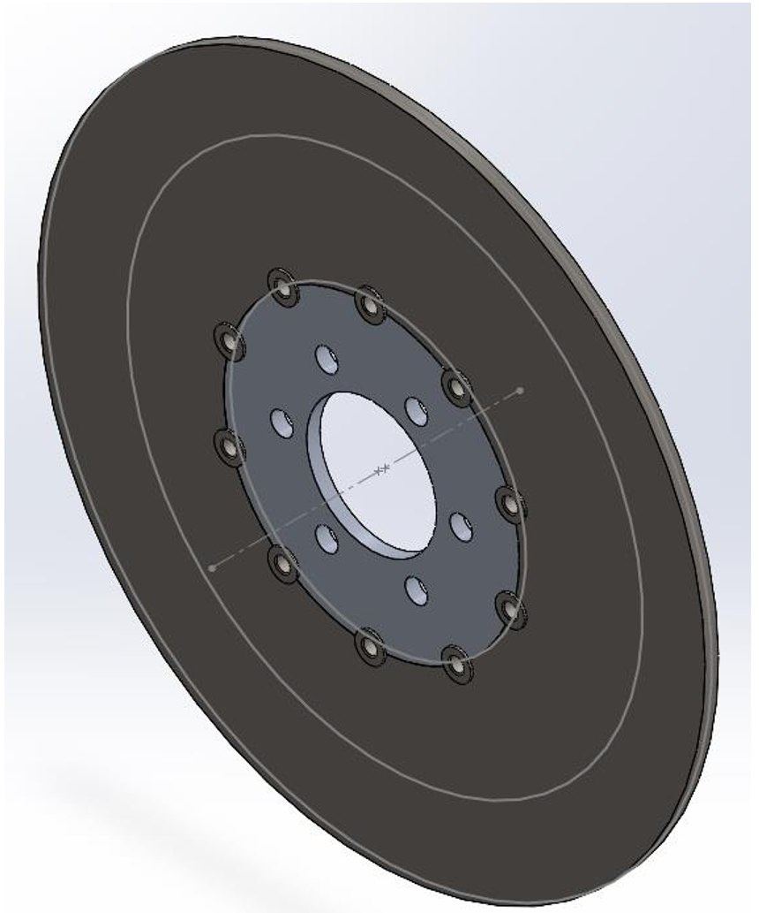
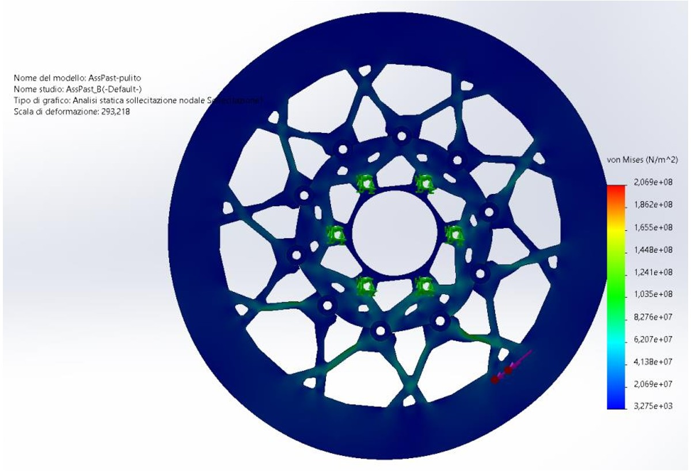

Il mio contributo
Ho realizzato tutti i modelli CAD, svolto tutte le analisi e curato l’ottimizzazione. Il progetto è stato sviluppato in un gruppo di quattro persone; slicing e stampa del prototipo sono stati svolti nell’ambito del team.
La sfida progettuale
Ridurre la massa di un disco freno flottante da motocicletta conservando le regioni funzionali e verificando il comportamento strutturale delle nuove geometrie.
Metodo e decisioni
Preservare la funzione
La pista d’attrito è rimasta integra. Ho concentrato l’alleggerimento sulla campana e sulla corona interna della fascia, rispettando le regioni funzionali.
Dalle iterazioni alla geometria finale
Ho confrontato le soluzioni parametriche con quelle topologiche e ricostruito le geometrie definitive in SolidWorks, prima delle verifiche finali.
- Modellazione iniziale, definizione dei carichi e analisi statiche con controllo della convergenza della mesh.
- Confronto fra ottimizzazione parametrica e topologica, seguito dalla ricostruzione delle geometrie in CAD.
- Verifica dei componenti e dell’assieme, sensibilità alla ripartizione del carico e valutazione a fatica.
Risultati
Nel modello, la massa dell'assieme passa da 2.831,6 a 1.861,8 g. La campana si alleggerisce del 29,1% e la fascia del 35,3%. La relazione individua nella finitura dei fori e delle sedi della campana un requisito per la verifica a fatica.


Limiti e sviluppi
Il prototipo è stato stampato in 3D per valutazioni di forma e montaggio. Non sono state validate sperimentalmente le prestazioni frenanti; restano da sviluppare prove fisiche e analisi termo-strutturali.
Immagini tratte dagli elaborati del team. I contributi personali sono riportati sulla base delle attività confermate dall’autore.